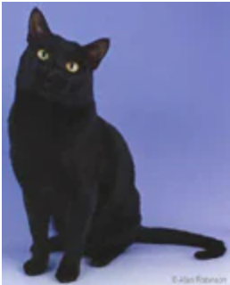
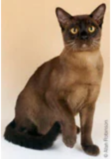
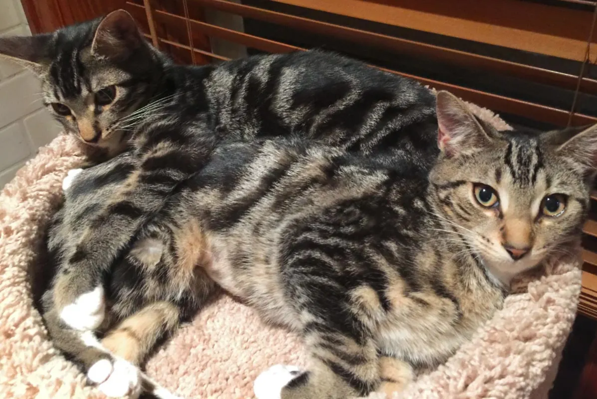

|
The Cutest Cat Breeds I Found on The Internet!
|
|  |
Bombay cats are unsuspectibly heavy medium-sized cats. It's physique is shaped round, even the ears and feet. It has shiny, golden eyes that are emphazied by the black and simple fur of the animal, which makes it majestic. |
Bombay |
|  |
Burmese cats are not much different from Bombey cats. Though they have different fur colors, they both have round bodies. These cats are known for their unique colored fur that makes them look as if they've been playing around with mud. |
Burmese |
|  |
Rare and mysterious--these are the words often used to describe Sokoke cats, due to their limited breeding status. They have beautiful tiger-like stripes and patterns on their furs which make them special. Aside from that, they have unsually long ears and tiptoe instead of walking like the common cat. |
Sokoke |